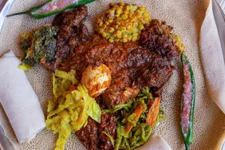

Injera

Injera is the staple bread of Ethiopia. It's traditionally made with teff flour, but regular millet flour from a health food store will work fine and give a similar nutty flavor. Use this bread to sop up the flavors of spicy stews.
Ingredinets
- 1 tablespoon active dry yeast
- 1 teaspoon honey
- 5 cups warm water (110 degrees F/45 degrees C)
- 3 cups finely ground millet flour
- ¼ teaspoon baking soda
Directions
- Dissolve yeast and honey in 1/4 cup water. Let stand until yeast softens and begins to form a creamy foam, about 5 minutes. Add remaining 4 3/4 cups water and millet flour; stir until smooth. Cover and let stand at room temperature for 24 hours.
- Stir batter well and mix in baking soda.
- Heat a large nonstick skillet over medium heat. Pour about 1/3 cup batter into the pan in a spiral pattern; quickly tilt the pan and swirl to even out batter so it covers the bottom of the pan. Cover and cook until injera rises slightly and is slightly moist on top but not browned, about 1 minute. Without flipping (injera is only cooked on one side), remove to a platter.
- Repeat to cook remaining injera, stacking on the plate when finished.
Back to Home